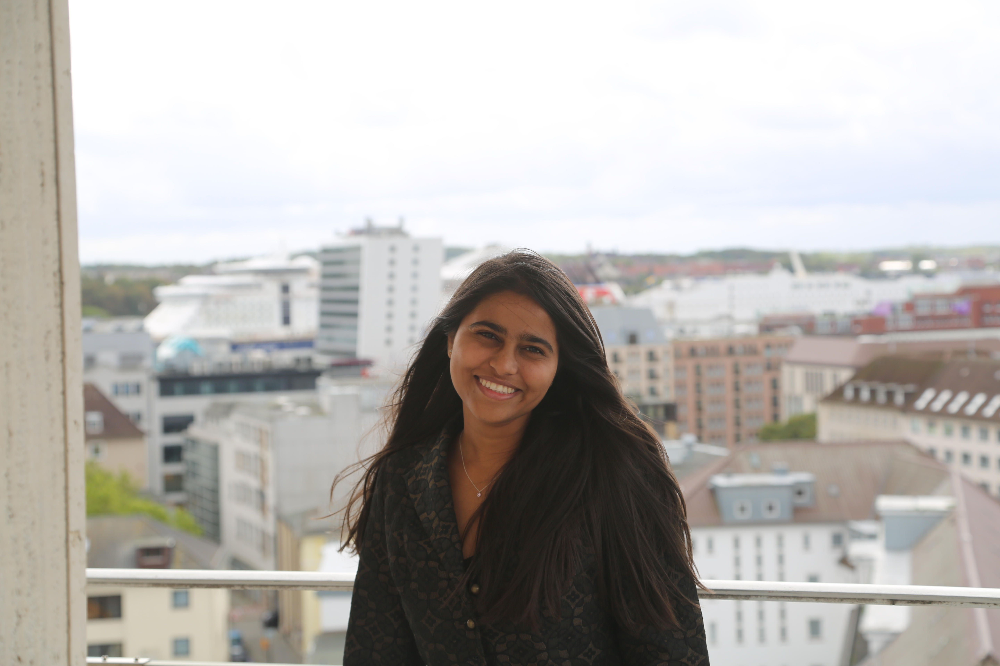

Sept 2026 · Kiel
How we detect nanoparticles through tissue
SAW + Delta-E sensors, Helmholtz coils, and why signal falls with distance. Simple explainer from my CRC 1261 work. Full paper in Publications tab.
Physics × Biophysics × Data Science
BS-MS Industrial Physics, IISER Thiruvananthapuram (2022-2027) · BS Data Science, IIT Madras (2022-2025)
I love to work where physics meets the body. Basically I chase tiny things to solve big problems. Microrobots that swim, quantum light that misbehaves, brain waves, and biosensors that sniff out colon cancer early.

Kiel, Germany. CRC 1261 Summer Research, 2026
Click a tab to explore. professors can jump directly to any section:
In 12th standard, I failed in boards.
I was a PCM student. Everyone around me was moving forward. I was stuck. I still remember that silence at home. Not anger, just worry.
My parents could have forced me into repeat coaching immediately. They did not. They knew I liked to question, to read, to build. My father did something brave. He took away all academic books and gave me one year. No syllabus. No exam. He said, find what you actually love.
So for one year, I was free. Imagine having a full library and nobody asking for marks. I read philosophy late at night. Science magazines in the morning. Random books on brain, universe, life. Nobody to judge. Slowly I stopped reading to pass, and started reading to understand.
One thing kept coming back. I love physics. But I do not want physics only on paper. I want it to touch someone's life. A patient. A hospital. Healthcare. That one line gave me direction when I had nothing.
Next year I came back to boards, JEE, IAT like everyone else. Same books, different girl. This time I knew why I was studying. I cleared them and reached IISER-TVM. First week there, I looked around and thought, these people are curious like me. They want to know how things work. That pushed me more than any rank.
After that I just kept exploring. Quantum optics in Roorkee. Bioinformatics and plasmonics in Delhi. EEG and consciousness with Surrey. Microrobots in Stuttgart. Biosensors for colon cancer in Kiel. Batteries, cells, brains, sensors. Different labs, same question: how can science help a human body?
I am still that girl from the gap year. Curious, hardworking, a little stubborn. I think I found my ikigai, and I want to go deeper.
From that gap year to IISER to labs across the world, I am still following the same question I found at 17.
Driven physics student working across experimental sensing, microfluidics, quantum theory, electrochemistry and computational biology. My recent work focuses on non-invasive magnetic nanoparticle (MNP) detection for biomedical sensing using surface-acoustic-wave (SAW) magnetoelastic and Delta-E magnetoelectric sensors. including measurements through biological tissue for early detection of complications after gastrointestinal cancer surgery.
In parallel I work on electromagnetic field theories of consciousness with EEG analysis (University of Surrey), magnetic microrobots in microfluidic channels (University of Stuttgart), quantum optical Bloch equations (IIT Roorkee), sodium-ion battery cathodes (IISER TVM), and bioinformatics tool development in R/Shiny (University of Delhi).
AC susceptibility at 180 Hz, Helmholtz coils (100 µT); phase shift Δϕ vs iron concentration (R=0.984); Debye/Brownian model; unshielded biomedical sensing proof-of-concept. I contributed MNP measurements, dilution series, analysis + block diagram.
Open paper (PDF)SAW magnetoelastic MNP detection talk. awarded Best Presentation.
Certificate (PDF)Project B12: AC susceptibility, Delta-E + SAW sensors; distance + bio-sample data.
Poster (PDF)C, C++, Python, R, MATLAB; EEG processing, Runge-Kutta simulation, data modelling, FIJI.
SAW & Delta-E sensors, Helmholtz coils, lock-in (MFLI), MPI, DLS, 3D-printed holders, CV/GCD/EIS electrochemistry.
PDMS microfluidics, hollow microrobots, magnetic actuation, microscopy, XRD/SEM, battery assembly, PCR, SDS-PAGE, Shiny apps.
Through IISER TVM I tutored underprivileged students in mathematics and science at a government school. weekly teaching, mentoring and study support, making science accessible beyond campus.
Played inter-batch volleyball at IISER TVM and at CAU Kiel. teamwork, discipline and fitness alongside full-time research.
Seiko-Kai, Shitoryu style. Black Belt 1st dan. Years of kata, kumite and perseverance. Also Aloha Level 3.
Tip: tap any card. more stories coming in Travel Blog below.
SAW + Delta-E sensors, Helmholtz coils, and why signal falls with distance. Simple explainer from my CRC 1261 work. Full paper in Publications tab.
PDMS chips, 8-50 µm bots, 6-21 V tuning. and why particles stick. Notes for future me.
Want email when I post? Contact me. I will add newsletter.
One day, no map, just canals. What solo travel taught me about confidence in a new lab too.
History + souvlaki + sunset. My cheapest happiest day.
Send me your travel photos/stories and I will add them here with your name.
Email: vidhi22@iisertvm.ac.in
Phone: +91 95748 66473 · Kerala, India
LinkedIn: vidhi-mayatra-b7b94824a
References: Available on request (Profs. Gerken, Aghakhani, McFadden, Mishra, Shaijumon, Dayal, Kumar).
For PhD applications: professors can download my CV directly from this site. Contact me for transcripts, recommendation letters or raw data.